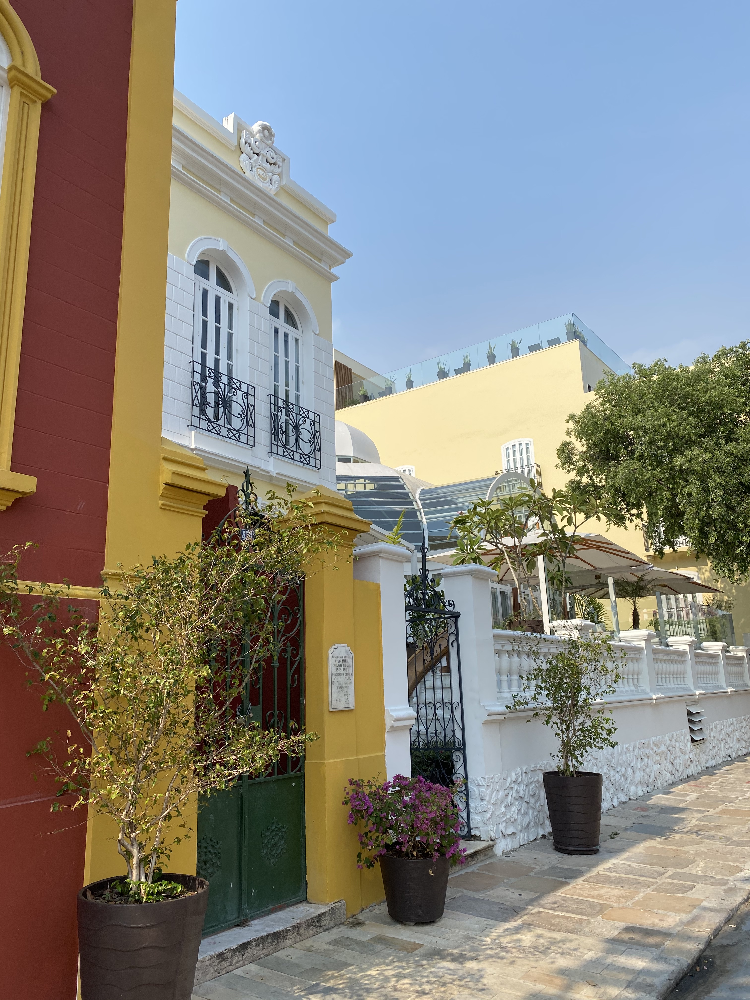
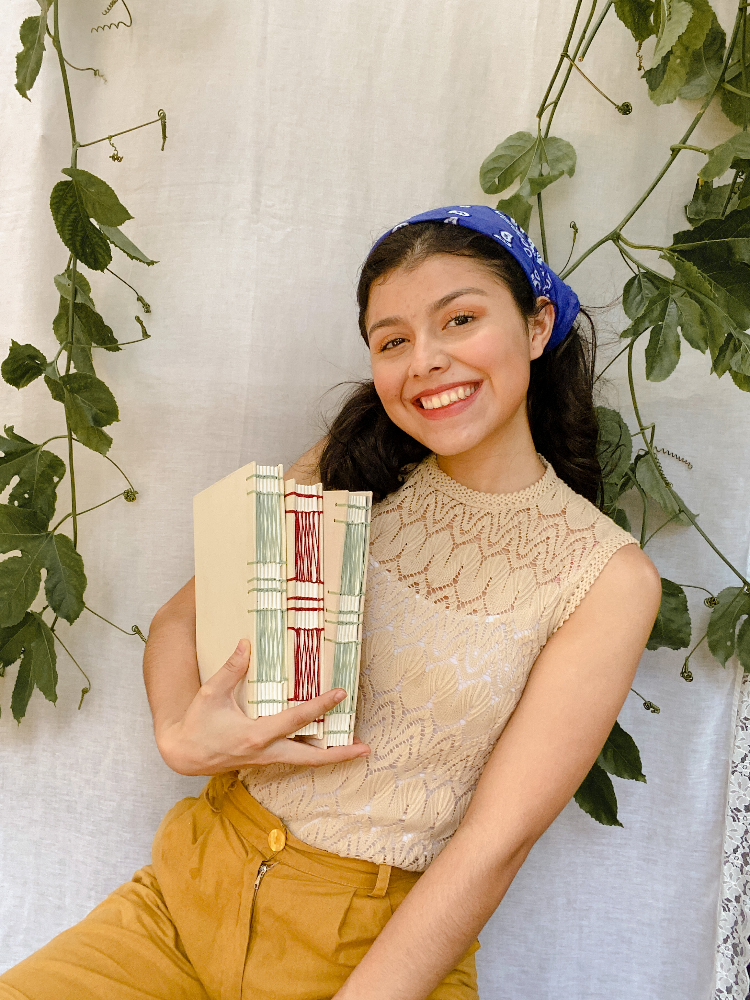
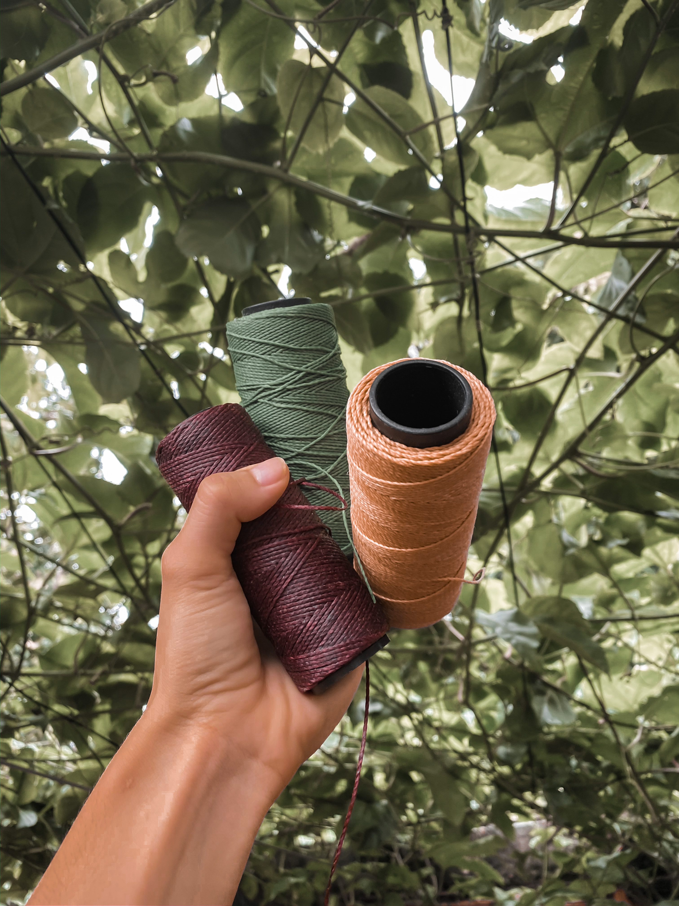
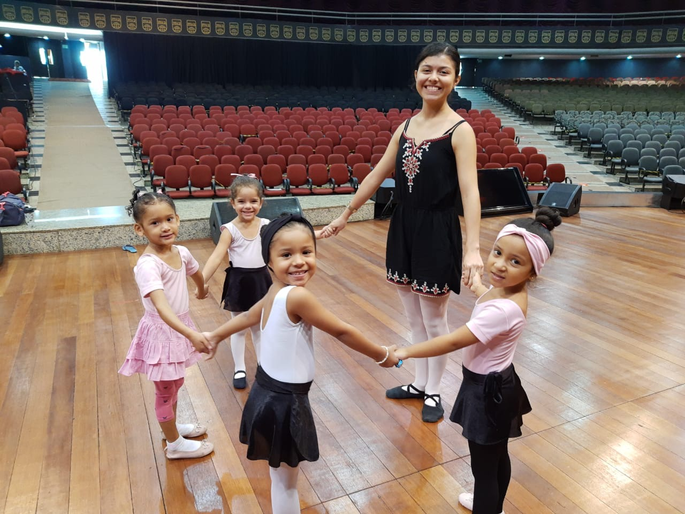

Endereço, e-mail e contatos
Avenida das Oliveiras 08, Novo Israel - Manaus, AM - Brasil
Nascimento: 20 de janeiro de 2002
 Mobile/WhatsApp: +55 92 9.8853-9961
Mobile/WhatsApp: +55 92 9.8853-9961
E-mail: hanahcorreay@gmail.com
 Instagram: @hanahss_
Instagram: @hanahss_
 Facebook: Hanah Correa
Facebook: Hanah Correa
Qualificações Acadêmicas
- Ensino Superior
- Ensino Médio Técnico em Informática
FMF - Faculdade Martha Falcão
Manaus, AM - Brasil
2020 - até presente momento
FMM - Fundação Matias Machline
Manaus, AM - Brasil
2017 - 2019
Histórico de Experiência Acadêmica
- Aluna no Apple Developer Academy
- Curso Internet das Coisas - IoT
- Curso de Adobe Illustrator
- Curso Ilustração Photoshop
Atuo como Designer
Janeiro/2020 - Até presente momento
FMM - Fundação Matias Machline
Matéria: Fundamentos da Informática
Setembro/2017 -Setembro/2017
Udemy Cursos
Função: Funções do básico ao avançado
Setembro/2019 - Setembro/2019
Domestika Cursos
Função: Ilustração Flat
Setembro/2020 - Setembro/2020
Histórico de Experiência Profissional
- Brigadeiros Gourmet
- Empresária e artesã na Grace Artesanatos
- Professora de Ballet para Babys
Descrição de Atividades: Fabricação e vendas, gerenciamento do capital
Período: Abril/2018 até Dezembro/2018.
Clientes: alunos da Fundação
Descrição de Atividades: Design, artesã, sócia-proprietária
Período: Janeiro/2019 até o presente momento.
Clientes: pessoas interessadas em papelaria artesanal
Descrição de Atividades: ensino ballet aos sábados para babys
Período: Setembro/2020 até o presente momento.
Idiomas
Italiano (Básico/ Básico/Básico) - Educação Ativa Idiomas
Inglês (Básico/Básico/Básico) - Fundação Matias Machline
Português: nativa
Outras Áreas de Interesse
Coisas que eu gosto
|  |  |
 |
 |
 |  |